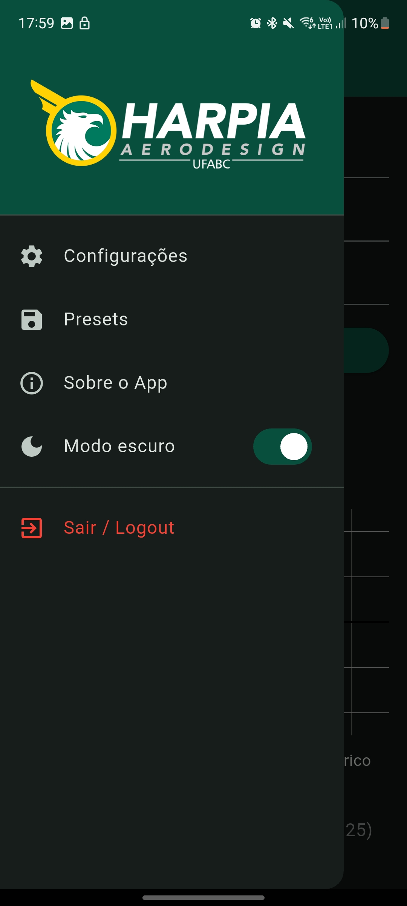
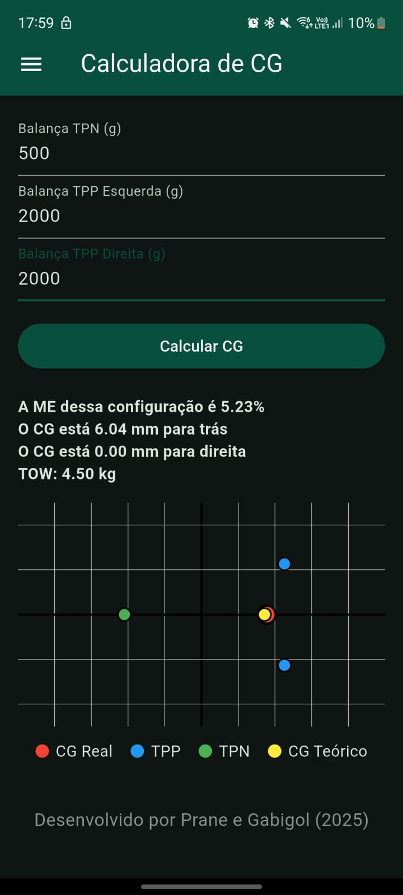
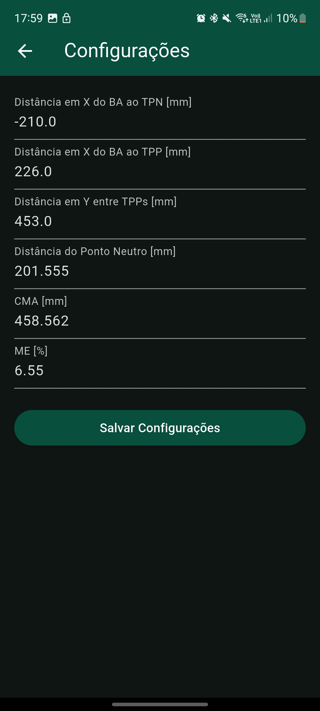

Aplicativo Móvel — Calculadora de Centro de Gravidade (CG)
1. Escopo e Desafio Técnico
Durante as rodadas de voo em uma competição de Aerodesign, o tempo entre as baterias é escasso e a precisão é vital. Mudar a carga útil (payload) exige recalcular instantaneamente a nova posição do Centro de Gravidade (CG) e verificar se a aeronave ainda opera dentro dos limites de estabilidade estática longitudinal estabelecidos pelo projeto.
O objetivo deste projeto foi eliminar planilhas analíticas complexas e lentas de pista, substituindo-as por um aplicativo mobile robusto e intuitivo. O software recebe as leituras de massa das três balanças do protótipo (uma no nariz e duas no trem principal) e calcula a posição exata em "X" e "Y" do CG, além da nova Margem Estática da aeronave.
2. Lógica e Funcionalidades de Engenharia
O aplicativo não faz apenas cálculos matemáticos simples; ele funciona como um centralizador de telemetria geométrica do avião através de blocos funcionais:
Matriz de Configuração Geométrica: Na tela de configurações, o usuário calibra as distâncias físicas entre o Bordo de Ataque (BA) e os trens de pouso de nariz e principal (TPN e TPP), o comprimento da Corda Média Aerodinâmica (CMA), e a posição teórica do Ponto Neutro da aeronave.
Plotagem Gráfica Cartesiana: O grande diferencial do app é a renderização dinâmica de um plano cartesiano que plota visualmente a localização do CG Real (ponto vermelho) confrontando-o diretamente com a posição de projeto do CG Teórico (ponto amarelo), alertando instantaneamente sobre desvios críticos de estabilidade ou excentricidades laterais.
3. Interface e Interface do Usuário (UI/UX)
Desenvolvido com uma interface moderna e responsiva baseada na identidade visual da Harpia Aerodesign UFABC, o software conta com sistema de salvamento de Presets para transições rápidas entre diferentes aeronaves da equipe, além de suporte completo a Modo Escuro nativo.


